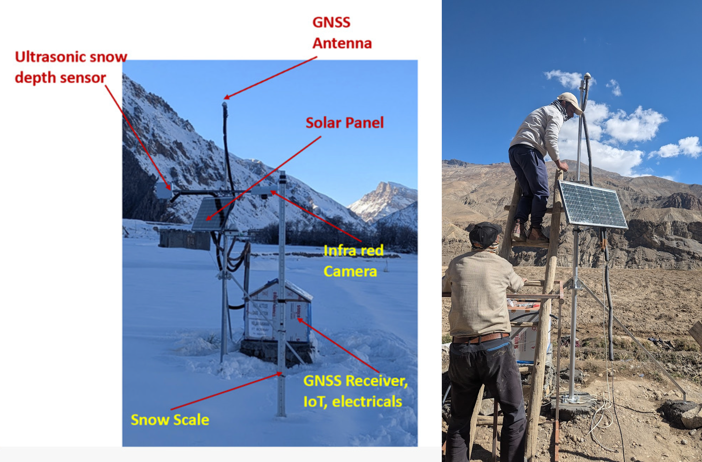
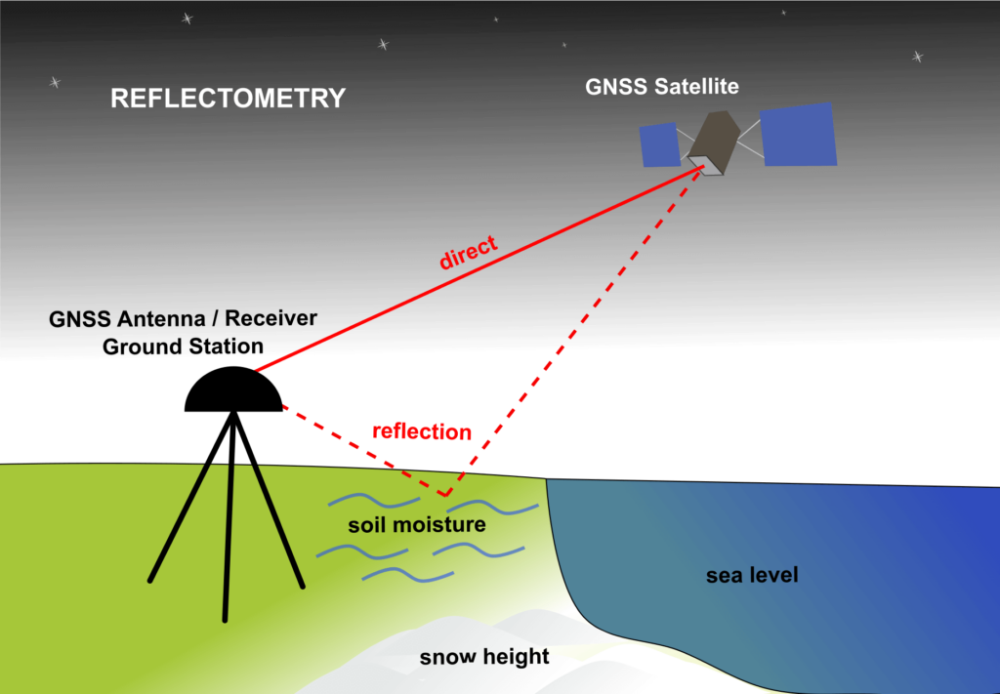
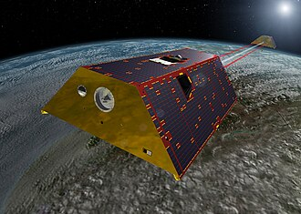

Advanced GNSS Station
We engage in the design and development of low-cost CORS stations for GNSS-IR studies, as well as to serve as base stations for GNSS-based mapping and surveying. Recently, we developed and deployed a low-cost GNSS CORS station at Mane in Spiti Valley to provide accurate positioning data and estimate geophysical variables like snow depth and snow water equivalent using GNSS-IR technology. The station features a Tallysman antenna and an ArduSimple receiver, ensuring reliable performance in remote, high-altitude environments. Efforts are going on to improve the system design and performance

GNSS Meteorology/Reflectoemetry
We engage in GNSS Meteorology, using satellite signals to measure precipitable water vapor (PWV) by analyzing atmospheric signal delays. Additionally, we work with GNSS Interferometric Reflectometry, which examines GNSS signal reflections from surfaces like soil and water to monitor snow depth and water levels, providing a cost-effective environmental sensing solution

Hydro Geodesy through Satellite Gravimetry
In partnership with the Technical University of Dresden, we are developing computationally efficient methods for deriving high-resolution estimates of total water storage changes by leveraging data from the GRACE and GRACE Follow-On satellite missions.

Imaging Geodesy
In this domain, we leverage advanced satellite techniques, primarily Interferometric Synthetic Aperture Radar (InSAR) to measure permafrost deformation, glacier velocities with millimetre-level precision. These cutting-edge methods offer powerful insights into freeze-thaw cycles of the active layer and long-term ground subsidence driven by permafrost degradation. By harnessing InSAR capabilities, we enhance monitoring of land deformation in permafrost regions and deepen our understanding of glacier dynamics through detailed 3D InSAR velocity measurements.